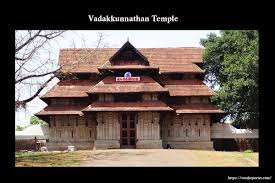
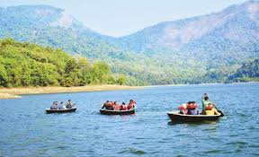
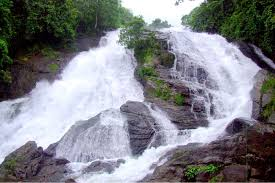
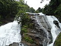

Chavakkad Beach
Chavakkad Beach in Thrissur is famous for the Azhimukam, the confluence of the river and sea. Visitors throng here to observe this delightful phenomenon. It is a great place to swim and relax in a serene environment. The nearby lighthouse attracts frequent visitors as well. On the other side of the beach is Ramachapadam, a vast farmland of the Ayurvedic herb, Ramacham. The fish market available in the evening sees a huge crowd every day. It is among the best picnic spots in Thrissur.

Vadakkumnathan Temple
Vadakkumnathan Temple is an ancient Hindu temple dedicated to Shiva at city of Thrissur, of Kerala state in India. This temple is a classical example of the architectural style of Kerala and has one monumental tower on each of the four sides in addition to a kuttambalam. Mural paintings depicting various scenes from the Mahabharata can be seen inside the temple.[1][2][3] The shrines and the Kuttambalam display vignettes carved in wood. The temple, along with the mural paintings, has been declared as a National Monument by India under the AMASR Act

Chimmony Dam
The reservoir attract tourists and there are coracles ride available at the reservoir.[4] The dam was commissioned in 1996. One uniqueness about this dam is the absence of canal system. The water contained in the reservoir is made available to the Kole fields and paddy fields by means of the river and the existing canal system through a regulator. No artificial canal system was set up for this purpose.

Vazhachal Falls
Though athirapally is regarded as the largest waterfall in this southern state Vazhachal isn’t far behind. With its rainforest charm and fountain of gushing white streams Vazhachal is represents the quintessential Malabar. Straight out from E. M. Forster’s Passage to India. The western ghats unleashes is beauty here with a vast range of wildlife and flora and fauna. All of these makes Vazhachal quite a formidable location of Nature Lovers, Photographers and Wildlife Enthusiasts. Similar to Athirapalli, Vazhachal too is quite famous as a picnic spot. Its relatively calm quiet ambience and serene natural beauty makes it a good picnic spot.

Charpa Falls
Charpa Falls is a waterfall located in Athirappilly panchayath in Thrissur district of Kerala. Located on the west-flowing Chalakudy River, this waterfall lies in between the more famous Athirappilly Falls and Vazhachal Falls.[1] It is a popular stopover for tourists who are visiting the Athirappilly and Vazhachal Falls. It is located close to the road,[2] and during monsoon months (June to August), the water splashes onto the road.[3] During the dry season, the water stops flowing.